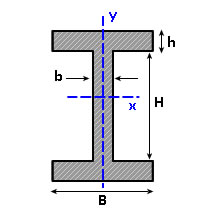
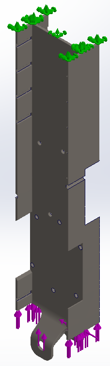
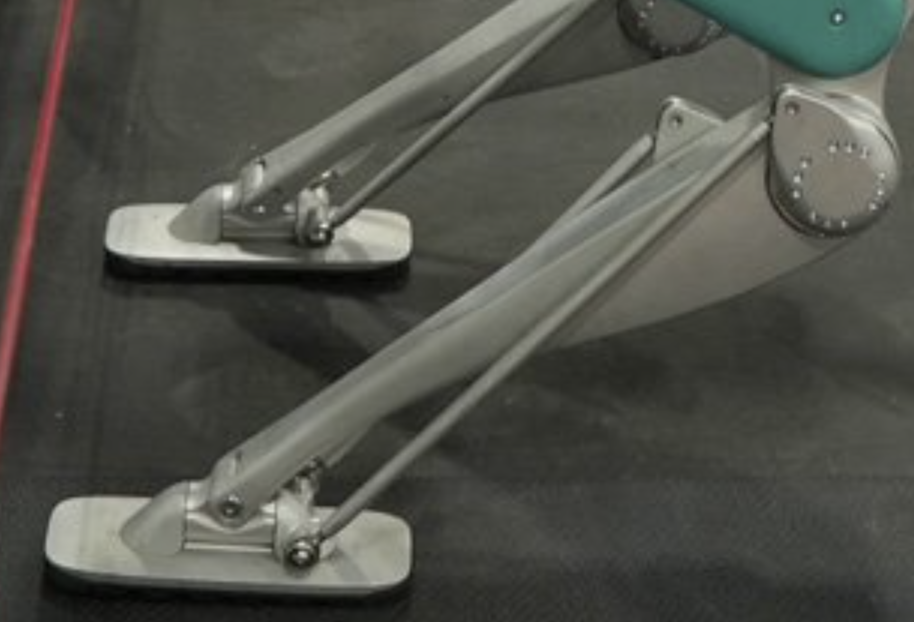
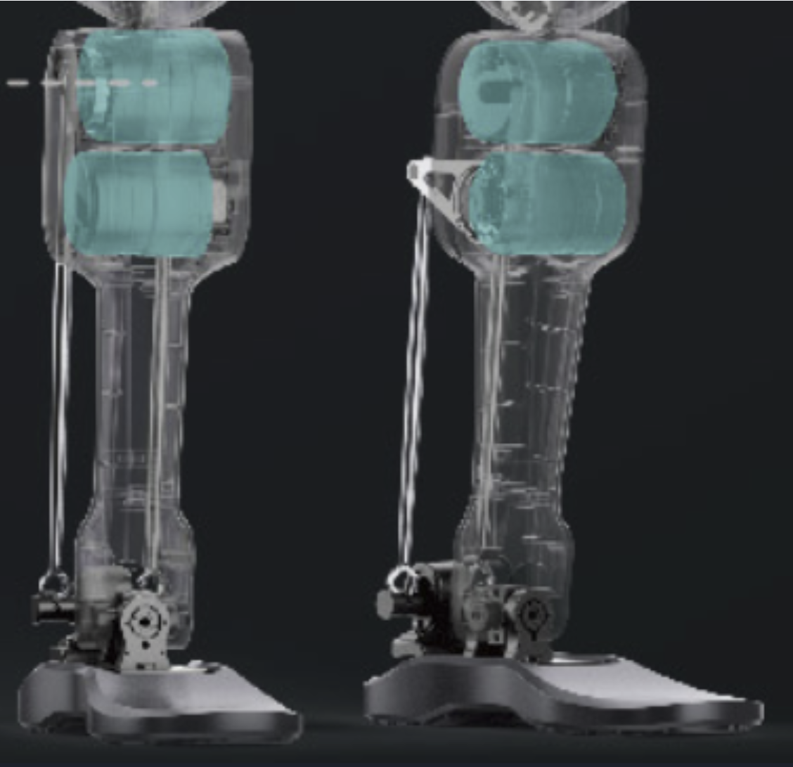
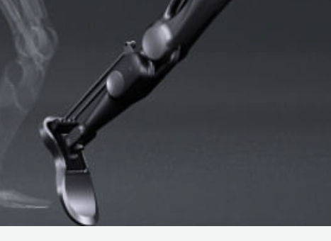
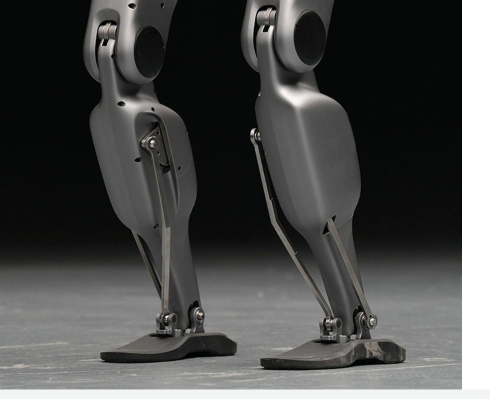
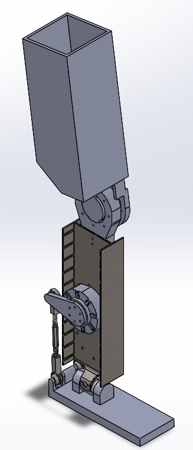

HRC L2 Humanoid Leg
Supporting files
Additional photos, video recordings, requirements, and project notes. The main case study presents the selected results; these files provide further context and design history.
Each file can be opened or downloaded individually. Expand a category to browse individual files. HEIC images may require downloading to view.
Media/Images (7)

media/images/archive-1--notes-figs--i-beam.jpg · 0.01 MB · Download

media/images/archive-1--notes-figs--shin-core-deformation-fs8.png · 0.03 MB · Download

media/images/archive-1--phase-1--linkage-sysytems--digit.png · 1.65 MB · Download

media/images/archive-1--phase-1--linkage-sysytems--g1-i-think.png · 0.60 MB · Download

media/images/archive-1--phase-1--linkage-sysytems--gr-1.png · 0.09 MB · Download

media/images/archive-1--phase-1--linkage-sysytems--gr-2.png · 0.83 MB · Download

media/images/archive-2--phase-2--shin-calf--notes-figs--shin-foot-quad.png · 0.08 MB · Download


Notes (1)
Read text
# HRC L2 Humanoid Leg ## Purpose Develop a functional humanoid leg with coordinated shin, thigh, knee, and ankle components. ## Requirements and constraints - Provide clearance for neighboring joints and actuators. - Explore axial strength and forward/backward bending stiffness. - Support component integration and design iteration. ## Engineering contribution My project work covered structural shin, thigh, and knee concepts, supported by SOLIDWORKS CAD, FEA, and MATLAB section-property studies. The design files explore I-beam geometry, modular electronics platforms, and a bearing-supported knee. These concepts belong to one L2 team project. ## Outcome and limits The HRC L2 team produced a complete, functional 3D-printed leg. It was never stress-tested or integrated into a larger assembly. The metal I-beam concepts and simulations in the design files are design studies, not evidence of load validation of the printed leg. ## From custom shin geometry to stock-section leg concepts Before: Phase 1 used a custom shin core and sliding electronics platforms, with substantial proposed machining. After: Phase 2 develops shin and thigh cores from lightly modified stock I-beams and adds forked knee connectors and a bearing clamp. These metal concepts were design studies; the printed team leg was not stress-tested.
project-notes.md · 0.00 MB · Download